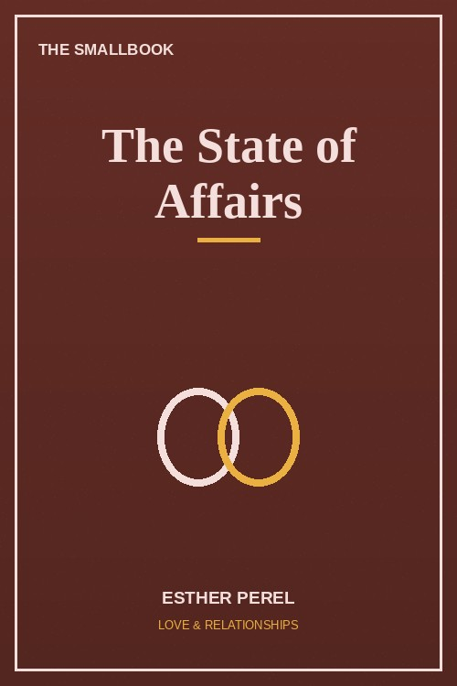

Library › Authors › Esther Perel
Books by Esther Perel
Esther Perel has 2 books in the library. Every book here is read down to the big idea, the lessons, the lines worth keeping and the actions worth taking. Start with the summary, then buy the full book if it earns a place on your shelf.

Mating in Captivity
2006 · 9 min · 8 lessons
Love seeks closeness. Desire needs distance. The art of a long relationship is holding both at once.
Esther Perel argues that the things that make love safe, familiarity, security, predictability, are the very things that smother desire. Eroticism lives in mystery, separateness and play. Couples do not need more intimacy to revive desire; they need to rebuild otherness, to see the partner again as someone they do not fully own or know, and to let a little space back into the togetherness.
Lessons in the summary
- Love and Desire Speak Different Languages
- Eroticism Is Not the Same as Sex
- Desire Is Not Politically Correct
- Parenthood Changes the Erotic Weather
- Monogamy Is a Conversation, Not a Default
- The Erotic Is a Bridge You Cross, Not a Room You Own
- Routine Is the Price of Safety, Not Its Substitute
- Desire Needs a Witness Who Is Not a Manager
Lines worth keeping
- Desire is not a problem to be solved. It is a paradox to be managed.
- Eroticism requires separateness. Fire needs air.
- When intimacy collapses into fusion, there is nothing left to desire.

The State of Affairs
2017 · 9 min · 8 lessons
An affair is not always a symptom of a broken marriage. Sometimes it is a protest against a life in which a person has gone missing from themselves.
Esther Perel spent a decade listening to couples after affairs, betrayers and betrayed, and argues that our script, affair equals moral failure equals end, fails everyone. Affairs are expressions of longing: for aliveness, for a lost self, for forbidden freedom, sometimes against death itself. Understanding is not excusing. But couples who can ask what the affair was reaching for, and answer honestly, often build a more truthful marriage than the one before the crisis.
Lessons in the summary
- Why Happy People Cheat
- The Affair as a Form of Self-Discovery
- Secrets Are the Engine, Not the Sex
- After Disclosure: The Two Jobs
- Should You Tell? The Honesty Dilemma
- A New Marriage With the Same Person
- Monogamy's Renegotiation Is a Conversation, Not a Contract
- Desire Needs Distance; Love Needs Closeness; Schedule Both
Lines worth keeping
- Affairs are an act of betrayal, and also an expression of longing and loss.
- The victim of the affair is not always the victim of the marriage.
- Sometimes, when we seek the gaze of another, it is not our partner we are turning away from, but the person we have become.
Questions Esther Perel helps answer
Read nearby authors next
- Brené Brown 3 books
- Alain de Botton 1 book
- Clara Whitfield 1 book
- Daniel Okafor 1 book
- Erich Fromm 1 book
- Gary Chapman and Jennifer Thomas 1 book
- Ines Duarte 1 book
- John Gottman and Julie Gottman 1 book